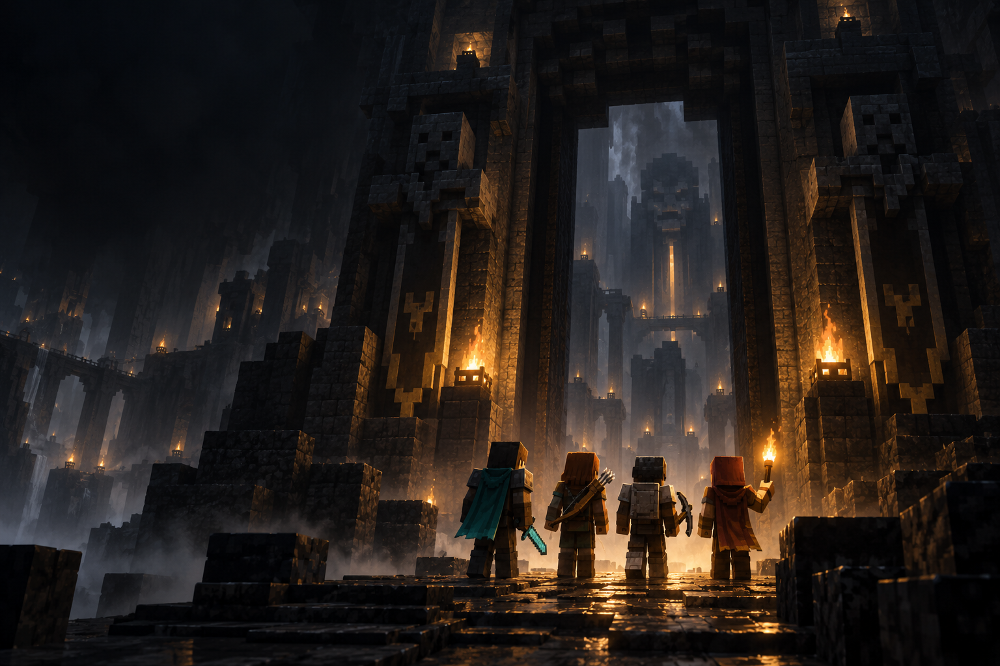
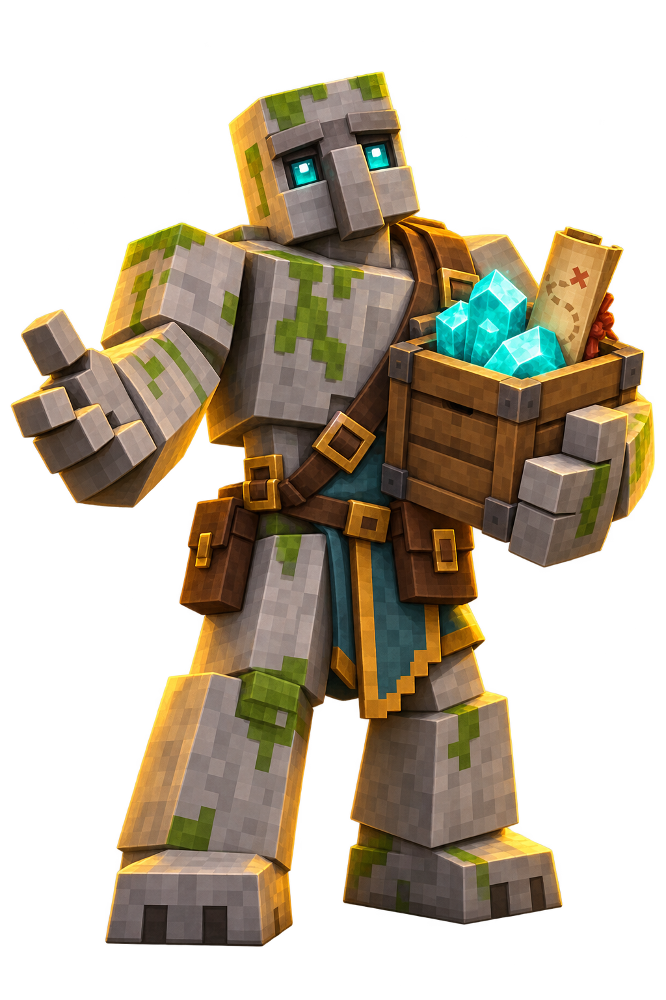
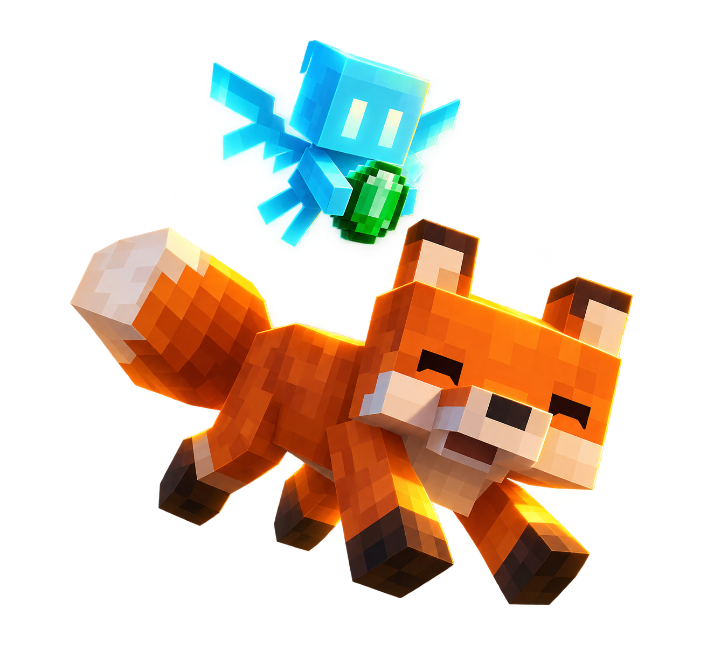

Fabric
Descarga el instalador oficial. La versión del instalador y la versión de Minecraft son distintas.
Descargar Fabric ↗Windows · Instalador universal .jar
EL SIGUIENTE PASO DE TU AVENTURA
Gluplandia se juega con Minecraft Java 26.2 y Fabric. Elige tu launcher y sigue la guía para preparar el cliente.
TU PUNTO DE PARTIDA
La versión del juego debe ser 26.2. Para Fabric Loader, elige la versión estable más reciente disponible para ella.
Descarga el instalador oficial. La versión del instalador y la versión de Minecraft son distintas.
Descargar Fabric ↗Windows · Instalador universal .jarPara tu cuenta Microsoft con acceso a Java Edition. También puedes instalarlo desde Microsoft Store.
Descargar launcher ↗Minecraft Java EditionSi utilizas TLauncher, sigue su guía específica y comprueba la versión de Fabric del perfil que vas a abrir.
Ir a TLauncher ↗Instalación automática o manual
El equipo publicará aquí el archivo mods.zip o mods.rar para Minecraft 26.2. Descárgalo cuando esté disponible y sigue las instrucciones para extraerlo.
Descargar paquetePendiente de publicaciónUN CAMINO PARA CADA LAUNCHER
Marca los pasos que completes. El progreso de esta guía se conserva mientras tengas abierta esta página.
Usa Java Edition, aunque hayas instalado el launcher desde la tienda. Inicia sesión con la cuenta que tiene acceso al juego.
Consulta la guía oficial de Fabric para tu sistema operativo.
El launcher permite instalar Fabric desde su lista de versiones. La disponibilidad del perfil depende de su catálogo.
Consulta las instrucciones de Fabric para TLauncher.
Fabric y los archivos .jar de esta guía corresponden a Java Edition. En Bedrock utiliza tu juego y los recursos específicos que indique el servidor.
La dirección es play.gluplandia.com. Consulta con el equipo la versión de Bedrock y el puerto habilitado antes de añadirlo. La disponibilidad de servidores personalizados depende de tu dispositivo.
Ver cómo unirseDEL ARCHIVO AL JUEGO
Este procedimiento sirve para el launcher oficial y TLauncher. Lo que cambia es la carpeta de juego del perfil que elegiste.
Cierra Minecraft antes de empezar. Guarda el archivo descargado en una carpeta temporal. Para un ZIP, usa la opción Extraer todo o el extractor de tu sistema. Para un RAR, usa un programa que admita ese formato y elige extraer su contenido.
Abre la carpeta resultante. Si contiene otra carpeta llamada mods, entra en ella hasta encontrar los archivos .jar.
Abre la carpeta de juego configurada para Fabric 26.2 en tu launcher. En el launcher oficial puedes consultar el Directorio del juego al editar la instalación. En TLauncher consulta su carpeta de juego configurada. Busca mods dentro de esa carpeta o créala si no existe.
Copia los archivos .jar extraídos directamente dentro de mods. La ubicación final de cada archivo debe ser similar a mods/archivo.jar.

El ZIP o RAR no se carga como un mod. Tampoco debe quedar una carpeta duplicada como mods/mods/archivo.jar. Los archivos .jar se copian tal como vienen, sin descomprimirlos.
Si ya tenías otros mods, guarda una copia fuera de esta carpeta antes de sustituirlos. Evita conservar versiones duplicadas o mezclar el paquete con mods de otra versión. Si el paquete incluye config o resourcepacks, copia esas carpetas en la raíz del perfil, al lado de mods.
Vuelve al launcher y abre el perfil Fabric 26.2. Si el juego informa de una dependencia ausente, revisa que copiaste todos los archivos del paquete.
ANTES DE CRUZAR
Abre la carpeta de juego del perfil que seleccionaste. Si mods no existe, créala ahí. La ruta configurada en el launcher tiene prioridad sobre cualquier ruta predeterminada.
%appdata%\.minecraft\modsFabric Loader y Fabric API son componentes distintos. Añade Fabric API si los mods del paquete la requieren y elige una descarga compatible con Minecraft 26.2.
Ver versiones de Fabric API ↗Lee el mensaje de Fabric y revisa el nombre y la versión que solicita. Comprueba que has instalado el paquete completo para 26.2 en la carpeta del perfil que estás ejecutando.
Consultar instalación de mods ↗La preparación se hace sobre Minecraft Java con Fabric. El paquete del servidor aparecerá en esta página cuando esté publicado. No hay un instalador propio disponible por ahora.
Tu equipo está a un paso del portal.
NOS VEMOS AL OTRO LADO
Minecraft Java 26.2 · Fabric